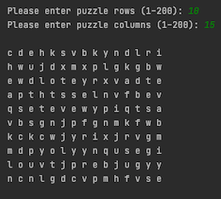
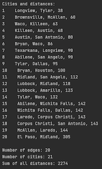

My name is Levon
I am a Computer Science student at the University of Texas at Dallas. Welcome to my site!
Here you can find some of the projects I've been working on
I have experience with Java, C++, and other languages. My resume can be found here
Word Puzzle Solver
|  |
A 2D command line word puzzle creator and solver Creates a random puzzle of user specified dimensions, then solves it with the choice of 2 algorithms: one quicker than the other, especially noticeable with larger puzzles! In large puzzles, using a hash table for lookups can make searching the puzzles for words (looking both ways in all directions: vertical, horizontal, and diagonal, for every cell) faster by orders of magnitude |
Minimum Spanning Tree
|  |
This program reads a list of interconnected cities and distances (or any type of nodes), and gives a minimum spanning tree by printing only the connections needed for minimum total distance to connect all the cities The input is a CSV file in adjacency list format, and can be modified to include a different or much larger list of nodes Demonstrates the use of a hash table, disjoint sets, and Kruskal’s algorithm to generate a minimum spanning tree of all the nodes |